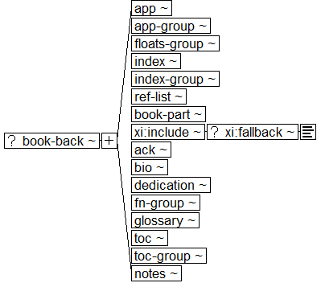

Book Interchange Tag Suite (BITS) Version 1.0 Tag Library Version 1.0
Digital Archive of Journal Articles
National Center for Biotechnology Information (NCBI)
National Library of Medicine (NLM)
Book and Book Part Back Matter Structures

Subsidiary sections:
Appendix structure diagram
Appendix Group structure diagram
Floating Element Group structure diagram
Index structure diagram
Index Entry structure diagram
Index Division structure diagram
Index Group structure diagram
Reference List (Bibliographic) structure diagram
Reference Item structure diagram
Acknowledgments structure diagram
Biography structure diagram
Footnote Group structure diagram
Glossary Elements List structure diagram